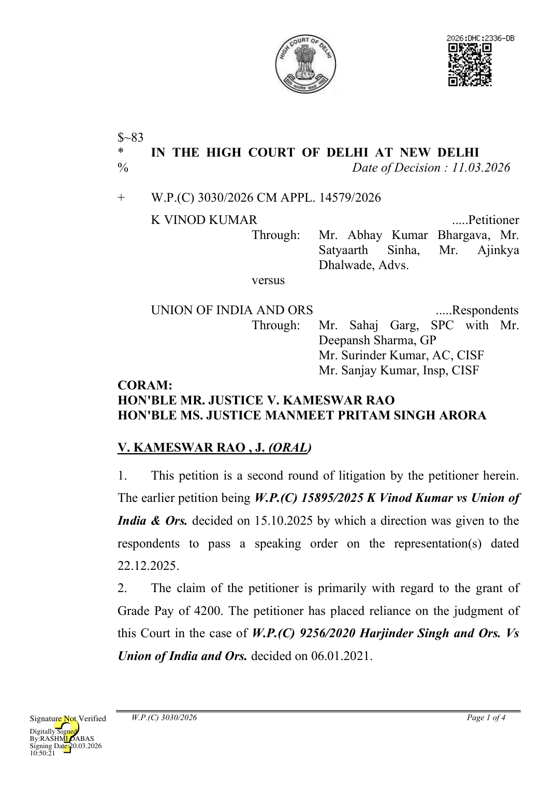

- Infact, a perusal of the judgment in the case of Harjinder Singh (supra) would reveal that this Court had in the said case relied upon W.P.(C) 3636/2016 Brahma Prakash & Ors. Vs Union of India and connected matters decided on 16.10.2018.
- A perusal of the said judgment would also reveal that the Special Leave Petition against the judgment of Brahma Prakash (supra) was dismissed by the Supreme Court.
- Now, the respondents have passed a speaking order on 10.02.2026. The respondents have rejected the claim by stating in Paragraph 3 of the order as under:
“3. ORDER:-
Now therefore in view of findings mentioned at above the undersigned order as follows:i) The petitioner cannot be granted Basic Pay of Rs. 10.230/plus Grade Pay of Rs. 4,200/- with effect from 16.07.2007 by exercising the option to continue in the old pay scale under the pre-revised pay structure of the CCS (Revised Pay) Rules. 2008, as claimed. As per provision (2) to Rule 5 of the CCS (RP) Rules, 2008, the option is not admissible to any person appointed to a post on or after 01.0l.2000, whether for the first time in Government service or by transfer from another post, and such person shall be allowed pay only in the revised pay structure. This position was also clarified to all the CISF formations Reserve Battalion and Units to review the pay fixation of personnel appointed as Sl/Exe. through LDCE on or after 01.01.2006 vide this Directorate letter No. E-12011/17/2008/Estt/H/09 dated 01.04.2010.”
- The submission of the learned counsel for the respondents is by relying upon an affidavit filed in a different writ petition being W.P.(C)
W.P.(C) 3030/2026
2677/2022 Padala Ravi Sankar and Ors vs Union of India & Ors., more particularly, Paragraph 4 wherein, the following has been stated:- “It is submitted that according to the Recruitment Rules for the post of Sub-Inspector (Executive) in the Central Industrial Security Force Security Wing (Sub-Inspector (Executive) Recruitment Rules, 2001), the methods of recruitment to the post of SI/Exe are Absorption, Direct Recruitment, Promotion, Limited Departmental Competitive Examination (LDCE), and Deputation. It is further submitted that LDCE is a distinct and independent mode of recruitment under the said Rules.”
- The submission of the learned counsel for the respondents is that Harjinder Singh and Brahma Prakash judgments have no applicability to the facts of this case as in those cases, Brahma Prakash and Harjinder Singh were employed in BSF and CRPF.
- There is no dispute that the promotion rules governing the promotion to the post of SI in the forces is also through Limited Departmental Competitive Examination (hereinafter, ‘LDCE’) and there is also no dispute that Harjinder Singh, Brahma Prakash and the petitioner herein have been promoted as SIs under the LDCE category.
- There is also no dispute that the judgments in the case of Harjinder Singh and Brahma Prakash have been implemented.
- One of the submissions of the learned counsel for the respondents is that the promotion of constable as SI (Executive) through LDCE during the year 2007 was strictly in accordance with Rule 5 of the CCS (RP) Rules, 2008 and the said Rules were not considered by this Court in the case of Brahma Prakash.
W.P.(C) 3030/2026
- The said submission made by the learned counsel for the respondents is incorrect as we find from the judgment in the case of Harjinder Singh (supra), more specifically in Paragraph 7, wherein, the Coordinate Bench of this Court had reproduced the judgment in the case of Brahma Prakash (supra) it is clear that Explanation 2 to Rule 5 of CCS RP Rules, 2008 was infact, referred to.
- If that be so, we find that the petitioner has been wrongly denied the benefit of the judgment in the case Brahma Prakash (supra) and Harjinder Singh (supra) on the ground that the promotion of the petitioner was through LDCE.
- Accordingly, we allow the writ petition and set aside the order dated 10.02.2026 with a direction to the respondents to extend the benefit of revised option to the petitioner under Rule 5 of the CCS RP Rules 2008 and in accordance with Office Order dated January,2020 and grant him all consequential benefits which he is entitled to within a period of eight weeks.
- Suffice to state that the pay shall be fixed notionally but the actual benefits shall be given only for a period of three years preceding the filing of the initial writ petition being W.P.(C) 15895/2025.
- The petition along with pending applications, if any, is disposed of.
V. KAMESWAR RAO, J
MANMEET PRITAM SINGH ARORA, J MARCH 11, 2026/tg
W.P.(C) 3030/2026